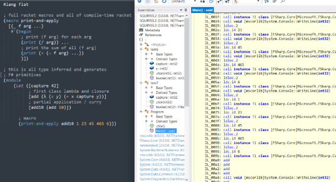

Flat - Resurrection!
Flat is a project from way back in 2019. The idea was to build a .NET language in Racket, surfacing the Racket macro system alongside a .NET runtime.

(sorry for the rubbish picture, the scaling killed it)
Intro
Flat, like Hackett, implements a type system in the Racket macro expander. The code it emits does so over the FSharp.Core primitives (FSharpFastFunc, OptimizedClosures, FSharpList, etc). The result is an F# like type system with a lisp syntax and programmable macros that have access to type information.
1 2 3 4 5 6 7 8 9 10 11 12 13 14 15 16 17 18 19 |
#lang flat ; full racket macros and all of compile-time racket (macro print-and-apply [(_ f arg ...) #'(begin ; print (f arg) for each arg (print (f arg)) ... ; print the sum of all (f arg) (print (+ (f arg) ...)))]) ; this is all type inferred and generates ; F# primitives (module (let ([capture 42] ; first class lambda and closure [add (λ (x y) (+ x capture y))] ; partial application / curry [add10 (add 10)]) ; macro (print-and-apply add10 1 23 45 465 6)) |
You can see here nice features such as partial application, automatic generalization, closures, full type inference and typed macros. It also supports unification over F# style (with lisp syntax …) lists and tuples, not seen here. Hopefully I will get to writing about the implementation of such a system in future posts.
The first iteration of this project was macros-over-assembler style like Asi64, except it produced text files that the .NET ilasm tool would accept. This approach worked ok, but ran into a problem early on which is that of type and metadata discovery.
To call a method on a type in some assembly, you need to know the exact metadata details. This information is available via the Reflection library, assuming you are already in .NET land, which we are not.
To solve this I put “reflection on an endpoint”. A C# service on a ZeroMQ endpoint that provides metadata discovery. It also accepts a json object that includes a bunch of lookups and il instruction streams, and will define an assembly and construct types and methods from it.
This also works ok, but the Racket macro expander doesn’t particularly like using a ZeroMQ endpoint, it is slow, and overall it was a band-aid to prove the project could work at all. I was much more interested in experimenting with implementing the type system in the macro expander. The other stuff was just a means to an end.
Additionally, the macros-over-assembler technique is fun, but without some sort of AST it is hard to implement a lot of common compiler optimisations and techniques, not to mention it starts to get quite slow. A better version would have the macros generating as little code as possible, with another runtime layer (or two) to do the heavier compiler work.
A New Plan!
I have recently resurrected this project, and spent a bunch of time getting the language server to work again and understanding how far I had come. The type system has legs and lots of the hard problems like closure generation and generic type support were solved, and the language is working, albeit a very early prototype. The things holding it back are the language server and the direct generation of il from the macros. What I need is, both at expansion and possibly at runtime, the ability to natively load and parse .NET assemblies for their metadata, and also write CLR executables directly. Essentially, to implement a Racket native .NET Reflection library and compiler / assembler / linker.
Getting Started
This probably sounds like a lot of work. Never look at the mountain! Armed with my trusty “The Common Language Infrastructure Annotated Standard” (I’m super fun at parties) and a slighty more recent CLI spec I have all the information required. I have always intuitively embraced the “tracer bullet” style of development - in this case, work out the smallest path to writing a hello world executable file. It won’t need a proper il assembler to start with, but it will need the (rather extensive!) metadata from the BCL to call System.Console.WriteLine, and the layout of the executable will need to be understood, even if a lot can be ignored in the beginning. It is still a lot of work.
A good place to start is parsing types from mscorlib (BCL) with a focus on performance. It will (eventually) be called at macro-expansion time so it needs to be as fast as possible.
More on that next time - stay tuned if you are interested in how the very low level CLI executables and metadata storage works.